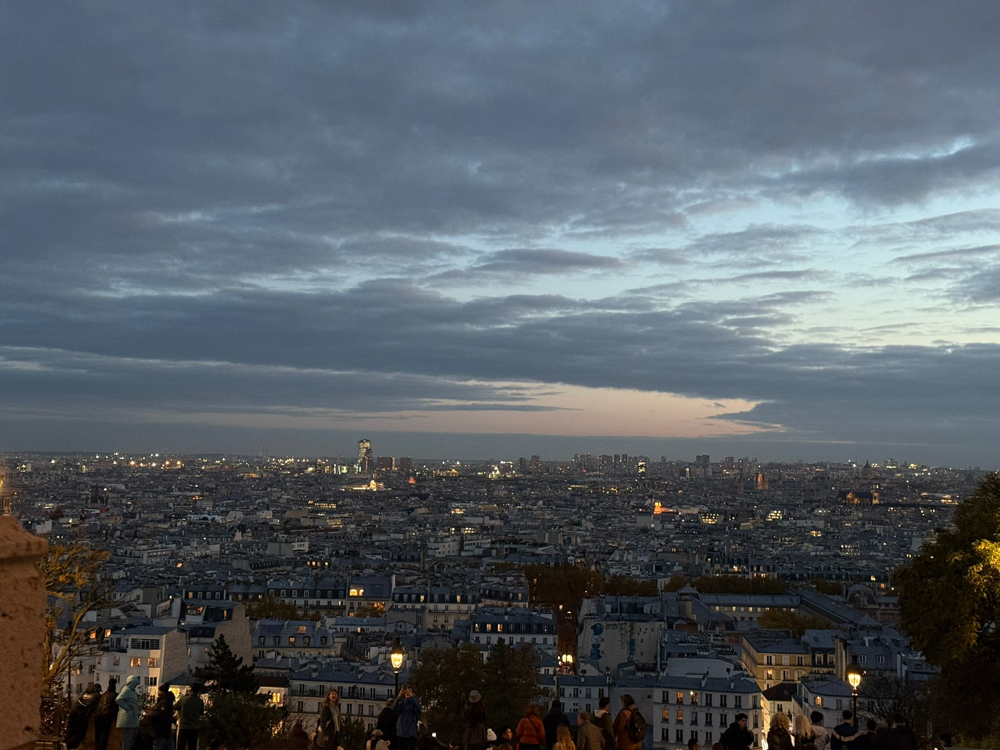
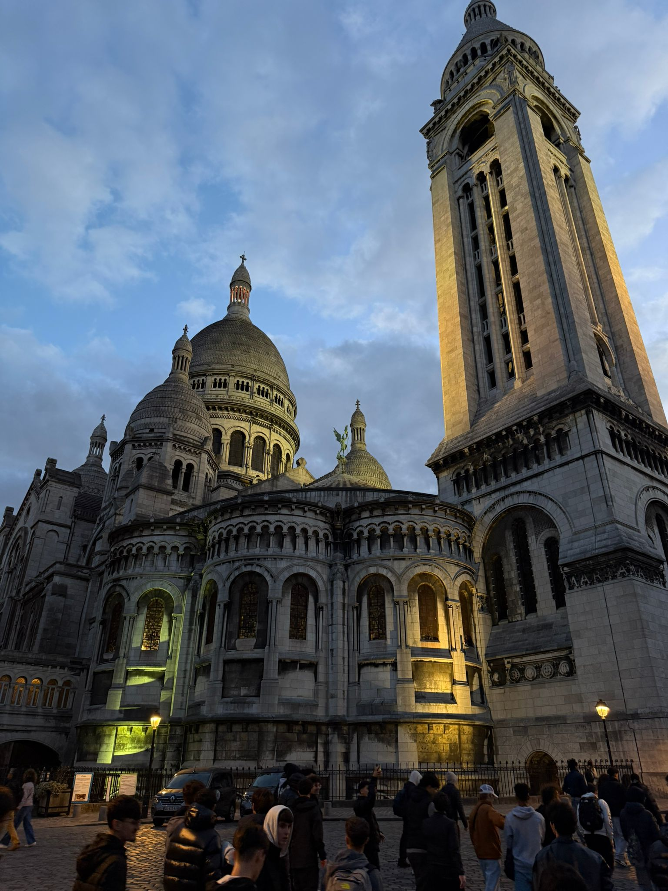

Montmartre
Borgo artistico e cuore bohémien: vicoli, piazze e ateliers tra i più iconici di Parigi.
Approfondisci → VIAGGIO D'ISTRUZIONE — dal 03/11/25 all'08/11/25
VIAGGIO D'ISTRUZIONE — dal 03/11/25 all'08/11/25
Panoramica dei luoghi della prima giornata.

Borgo artistico e cuore bohémien: vicoli, piazze e ateliers tra i più iconici di Parigi.
Approfondisci →
Simbolo di pace e fede dopo il 1871; panorama fra i più belli della città.
Approfondisci →Durata indicativa: 4–5 ore complessive